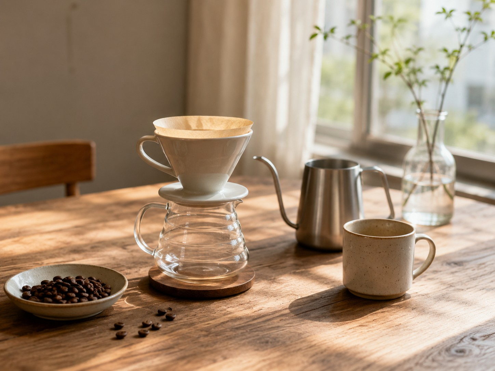

01
まずは豆を選んでみたい
自分に合う豆を見つけるところから。
いろいろな豆を探してみましょう。
FOR BEGINNERS
ABOUT

コーヒーを始めてみたいけれど、
どんな豆を選べばいいのか、
どんな道具を揃えればいいのか、
わからない。
はじめる珈琲店は、そんなあなたの
「やってみたい」をそっと応援します。
難しいことは、あとからで大丈夫。
まずは、気軽にコーヒーを楽しむところから
はじめてみませんか？
BEGINNER'S QUESTIONS
豆の種類が多くて、
どれを選べばいいか
わからない
道具は何から
揃えればいいの？
淹れ方を調べても、
方法がいろいろあって
迷ってしまう
こんな初歩的なこと、
聞いても大丈夫？
TOGETHER
コーヒーを始めると、
きっとまた新しい「わからない」が出てきます。
淹れ方がうまくいかなかったり、
いつもと味が違ったり、
次はどんな豆を飲んでみようか迷ったり。
そんなときも、ひとりで悩まなくて大丈夫。
講習会で聞いてみたり、
コラムを読んで試してみたり、
同じようにコーヒーを楽しむ仲間と話してみたり。
うまくいった日も、いかなかった日も、
そのひとつひとつを楽しみながら、
自分の好きな一杯を見つけていきましょう。
はじめる珈琲店は、
いつでもここでお待ちしています。